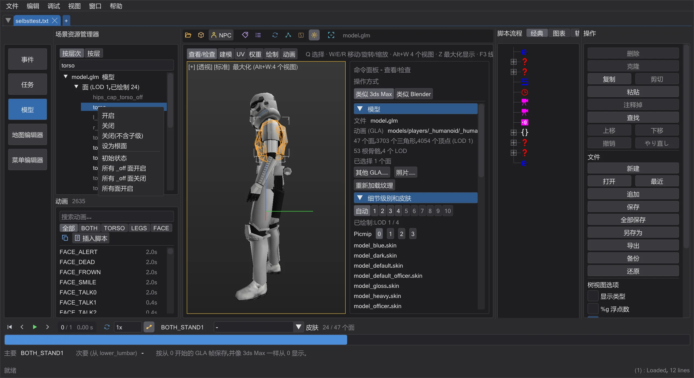
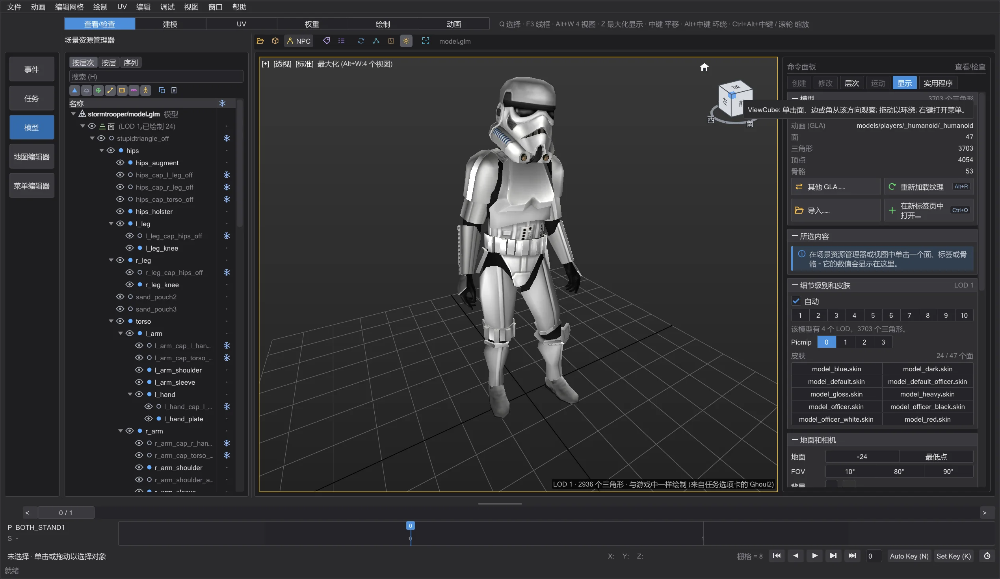
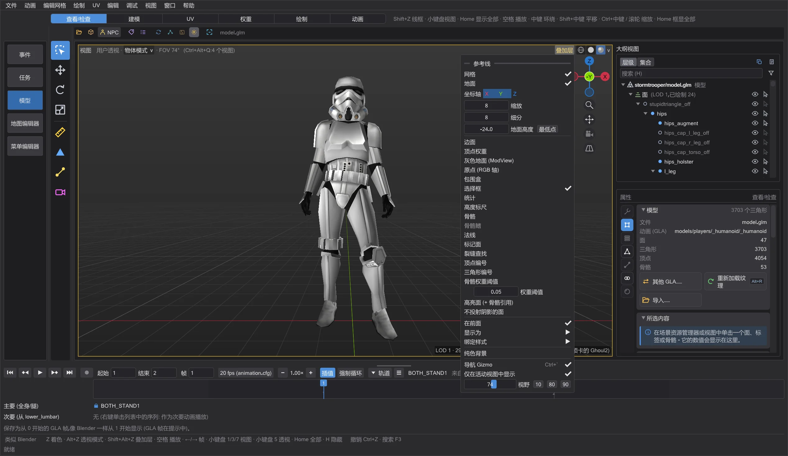

模型选项卡:查看与检查
像在 ModView 中一样查看模型——面、标记、骨骼、LOD、皮肤、附加的光剑、主要和次要动画——按游戏的方式绘制,并对照 Jedi Academy、Jedi Outcast 和 Movie Duels 的限制进行检查。鼠标和按键与 3ds Max 相同。

像以前一样打开模型(NPC、.glm、.pk3)。选项卡从 查看/检查 开始;其他区域(建模、UV、权重、绘制、动画)将在模型模块的后续阶段提供——它们的视图、资源管理器和时间轴已经可用。模型连同所有细节级别载入自己的文档;未修改的模型绘制出的画面与以前完全相同(已用 Jedi Academy、Jedi Outcast 和 Movie Duels 中 models/players 下的每个模型检查)。
场景资源管理器#
场景资源管理器 显示面(按层次 或 按层)、标记和骨架的骨骼;搜索 (H) 按名称过滤。灰色的面不会被绘制。右键单击的作用与 ModView 和游戏相同 (G2_SetSurfaceOnOff、G2_SetRootSurface):关闭 隐藏该面但保留其子级,关闭(不含子级) 隐藏整个分支,设为根面 只绘制此分支,初始状态 全部撤销。皮肤中的 name,*off 行也以同样方式关闭一个面。带橙色圆点的骨骼会被游戏代码查找。

右键单击标记(例如 *r_hand)或骨骼并选择 附加模型……,即可从游戏存档附加模型——光剑、武器、头部——与 G2API_AttachG2Model 相同:附加在标记上时跟随标记三角形,附加在骨骼上时跟随骨骼。卷展栏 附加物 列出它们并可再次分离。
命令面板#
模型:文件、骨架、数字、其他 GLA……(从存档覆盖 GLA)、重新加载纹理 (Alt+R) 和 照片……(当前视图,至少 1920 像素宽)。细节级别和皮肤:LOD 1-10 或 自动——与游戏相同,由距离选择级别(单人模式:半径 40,r_lodscale 10;多人模式:半径 64,r_lodscale 5);picmip 和皮肤。显示选项位于视图标题栏 (见下文)。
单击 动画 中的动画即可作为 主要(全身)播放。右键单击另一个动画并选择 次要 (从 ),即可像游戏中的 SET_ANIM_UPPER 一样在 lower_lumbar 以上的上半身播放(其他起始骨骼:右键单击骨骼)。插值 像游戏一样在两帧之间混合。时间轴像 3ds Max 和 animation.cfg 一样从 0 开始计帧。
视图标题栏、ViewCube 与 Gizmo#
每个视图左上角都有标题栏, 如 3ds Max 的视口标签菜单——鼠标悬停时字段高亮, 左键或右键单击打开其菜单。[+]: 最大化视口 (Alt+W)、最大化显示 (Z)、视图显示的内容 (网格 G、地面、原点、包围盒、选择框 J、统计 7、高度标尺、纯色背景)、子菜单 骨骼与检查 (骨骼、鳍、法线、标记、裂缝查找、顶点与三角形编号)、ViewCube 和视野。[透视]: 观察点, 使用 3ds Max 的按键 (P、U、T、B、F、L) 以及 起始视图 (角色正面)。[标准]: 此视图的着色——线框 (F3)、边面 (F4)、双面、白色纹理、顶点权重、剪影。四视图中每个视图保留自己的着色、网格和统计。视图的右键菜单中有相同的菜单, 搜索所有操作 (X) (X) 能找到每个开关, 其提示说明它的位置。需要选中面的开关 (编号、裂缝查找) 在选中面之前会在视图中提示。
![3ds Max 模式下的视图标题栏: [+] 菜单及骨骼与检查, 右上角为 ViewCube。](../bilder/zh/h_mbk_max.webp)
活动视图右上角的 ViewCube 显示观察方向, 其行为与 3ds Max 的相同。它有 26 个目标——6 个面、12 条边、8 个角; 鼠标下的目标会高亮, 单击后视图以简短动画转到该方向。投影保持不变: 透视视图仍为透视; 在正交视图中, 面切换到其视图 (前、顶 ...), 边或角得到自由的 正交 视图。拖动立方体可环绕。下方的指南针环标有北、东、南、西: 拖动圆环只绕垂直轴旋转, 单击字母则从该方向观察。正对某个面时, 四个箭头通向相邻的面, 两个弯曲箭头将视图滚动 90 度。左上角的房子是 Home: 相机飞到角色正面居中的位置。右键菜单提供 Home、将当前视图设为 Home 和 正交。鼠标不在其上时立方体为半透明。角色在 .glm 中朝向 -Y (游戏会把它转向 +X), 所以前视图显示其面部——加载角色后、Alt+W 之后以及重置视图时也是如此; 与 3ds Max 相同, 北方位于“前”面之后。[+] > ViewCube 可关闭立方体或指南针、在全部四个视图中显示立方体, 并设置 北方角度。

Blender 模式下标题栏的布局与 Blender 的 3D 视图相同: 左侧为 视图 菜单 (框显所选、框显全部、透视/正交、带小键盘按键的 观察点、带环绕、滚动和对面的 导航、切换四视图), 右侧为 叠加层 和 视口着色 的三个按钮——线框、实体、材质预览——以及用于背面剔除和剪影的下拉菜单。其下方是导航 Gizmo: 单击轴沿其观察, 再次单击从对面观察, 拖动可环绕 (轴视图会变为透视, 如 Blender 的自动透视); 下方为缩放、移动和透视/正交。小键盘与 Blender 相同: 4/6/8/2 环绕 15 度, Shift+4/6 滚动, 9 为对面, Ctrl+1/3/7 为后、左、底, Shift+Z 线框, Ctrl+` 切换 Gizmo。

ViewCube 源自 WhiteoutDex (max_viewcube.h, BSD 3-Clause 许可, Copyright (c) 2026 WhiteoutDex Contributors) 和 WhiteoutFlakes (BSD 3-Clause 许可, 附 AI 衍生作品声明, Copyright (c) 2026 Fernando Sahmkow); 导航 Gizmo 由 JK Studio 自行绘制——不含 Autodesk 或 Blender 的图形。
针对游戏检查#
针对游戏检查 针对目标游戏检查模型:每个面的顶点和三角形(Jedi Academy 和 Jedi Outcast 在 1000 个顶点时报错中止,Movie Duels 为 4000)、每个面 32 根骨骼、每个顶点 4 个权重、Ghoul2 实例 (MAX_G2_MODELS)、animation.cfg 的每一行对照 GLA 的帧数(超出末尾时,在基于 OpenJK 的游戏中角色会呈 T 姿势,原版则让角色保持站立),以及没有纹理或着色器的面。
像 3ds Max 一样操作#
操作方式 默认为 类似 3ds Max;类似 Blender 的键位将在 1a-2 阶段提供。在视图、资源管理器、命令面板或时间轴中单击后按键生效;X 列出全部按键。Gizmo 在模型文档中移动、旋转或缩放所选的面(所有细节级别)——Ctrl+Z 可撤销。
| 鼠标中键 / Alt + 中键 / 滚轮 | 平移 / 环绕 / 缩放 (Ctrl + Alt + 中键:拖动缩放) |
| 左键单击 / 拖动 | 选择面 / 框选 (Ctrl 添加,Alt 移除) |
| Q / W / E / R | 选择、移动、旋转、缩放 (F5 / F6 / F7 限制到 X / Y / Z,F8 平面,+ / - Gizmo 大小) |
| Alt+W / P T F L B / Z | 四个视图或一个 / 透视、顶、前、左、底 / 最大化显示 (所选) |
| F3 / F4 / G / J / 7 | 线框、带边面、网格、选择框、统计 |
| / , . Home End | 播放/停止、后退/前进一帧、首帧/末帧 |
| Ctrl+A / Ctrl+D / Ctrl+I / H | 全选、取消、反选;按名称选择 |